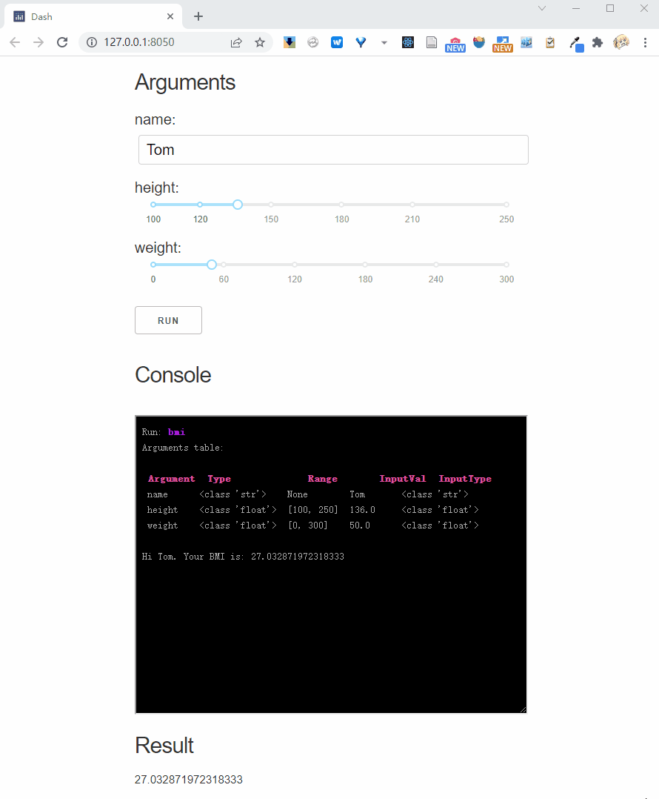
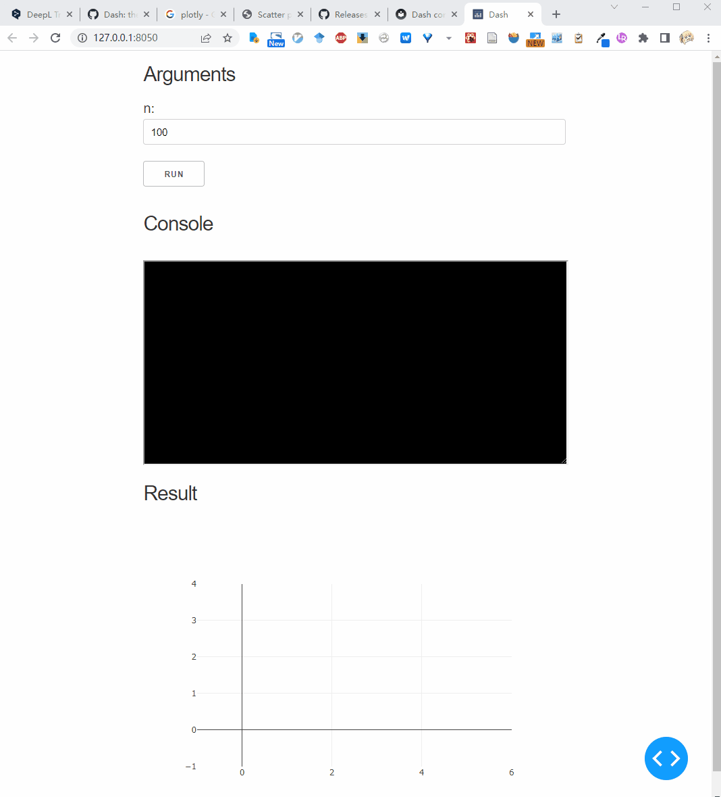
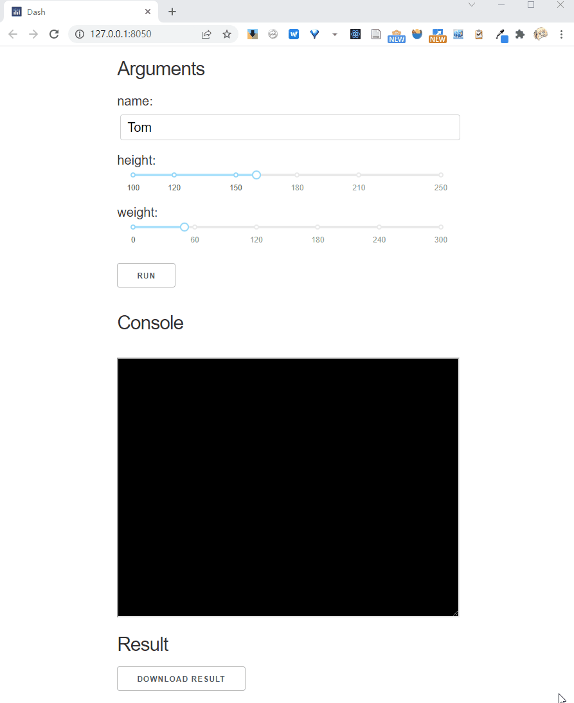
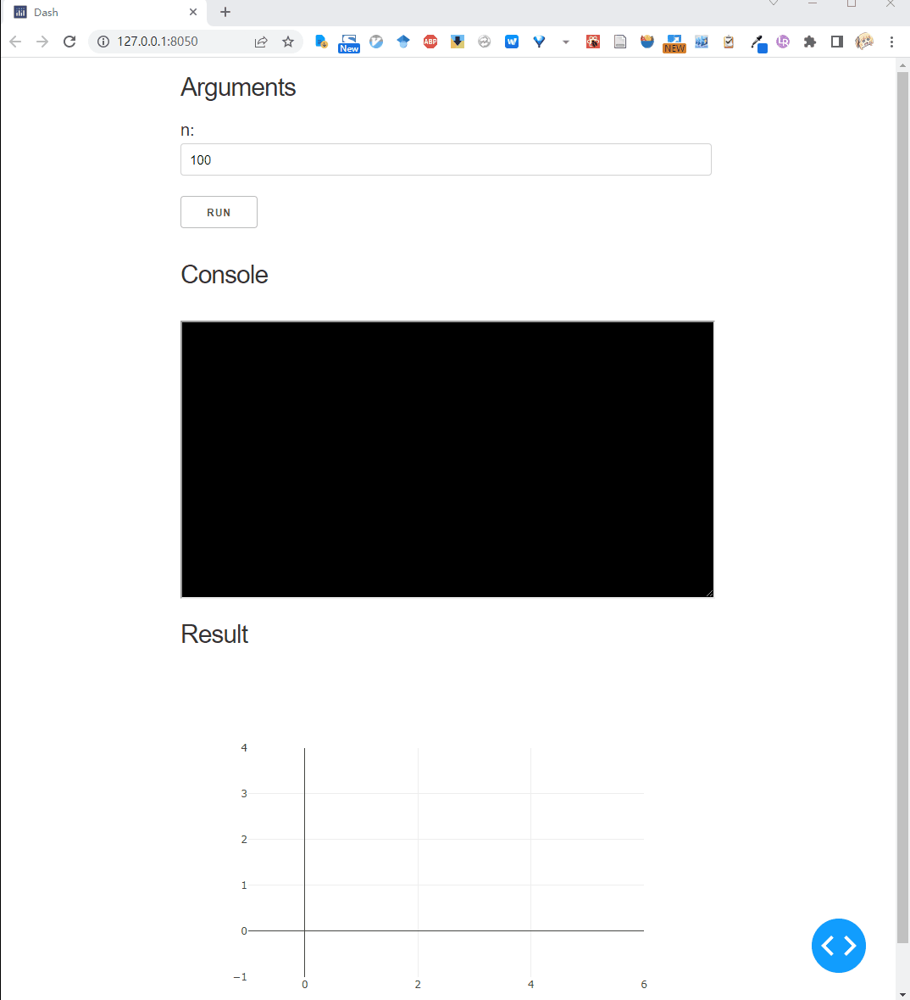

Dash interface configs
Hidden console
oneface dash provides a terminal for displaying operational status.
The show_console parameter is used to control whether it is displayed.
from oneface import one, Val
@one
def bmi(name: str = "Tom",
height: Val[float, [100, 250]] = 160,
weight: Val[float, [0, 300]] = 50.0):
BMI = weight / (height / 100) ** 2
print(f"Hi {name}. Your BMI is: {BMI}")
return BMI
bmi.dash_app(show_console=False)
Will not show the console.
Console refresh interval
By default, the console is refreshed in 2 seconds (2000 microseconds).
console_interval can be used to set the refresh interval
Will set refresh interval to 1 second.
Argument label
By default, argument label is the variable name. But it can be explicitly set by text parameter:
@one
def bmi(name: Val(str, text="NAME"), # explicitly label setting
height: Val(float, [100, 250]) = 160,
weight: Val(float, [0, 300]) = 50.0):
BMI = weight / (height / 100) ** 2
print(f"Hi {name}. Your BMI is: {BMI}")
return BMI
Init run
By default, it is not called until the user clicks the run button.
However, the initial call can be turned on by setting init_run=True:
This will cause the bmi function to be called once automatically at the end of app initialization.
In this case, all parameters need to have default values.
Interactive parameter
Interactive parameters rerun the function each time the input is changed.
We can use Val's parameter to mark the interactive mode, for example we mark height as interactive:
@one
def bmi(name: Val(str) = "Tom",
height: Val(float, [100, 250], interactive=True) = 160,
weight: Val(float, [0, 300]) = 50.0):
BMI = weight / (height / 100) ** 2
print(f"Hi {name}. Your BMI is: {BMI}")
return BMI

And, if you pass interactive = True to the .dash_app method, it will mark all parameters as interactive:
Result show type
By default, the result_show_type is 'text', which means that the result will be displayed in text.
In addition, the results can also be presented in other forms:
Plotly figure type
Dash app can integrate the plotly to drawing dynamic figures in HTML.
By setting result_show_type to 'plotly' and wrap a function return the plotly figure object,
we can archieve this:
from oneface import one, Val
import plotly.express as px
import numpy as np
@one
def draw_random_points(n: Val[int, [1, 10000]] = 100):
x, y = np.random.random(n), np.random.random(n)
fig = px.scatter(x=x, y=y)
return fig
draw_random_points.dash_app(
result_show_type='plotly',
debug=True)

Download type
In many cases, the results of running a web application need to be downloaded as a file for the user.
You can set the result_show_type='download' for this purpose.
In this case, the target function should return the path to the result file:
from oneface import one, Val
@one
def bmi(name: Val(str) = "Tom",
height: Val(float, [100, 250], interactive=True) = 160,
weight: Val(float, [0, 300]) = 50.0):
BMI = weight / (height / 100) ** 2
out_path = f"./{name}_bmi.txt"
with open(out_path, 'w') as fo:
fo.write(f"Hi {name}. Your BMI is: {BMI}")
return out_path
bmi.dash_app(result_show_type="download")

Custom result type
You can custom the dash app layout by inherit the oneface.dash_app.App class.
For example we can create a app draw a random series:
# random_series.py
from oneface.dash_app import App
from oneface import Val, one
import numpy as np
import plotly.express as px
from dash import Dash, Output, Input, dcc
class PlotSeries(App):
def __init__(self, func, **kwargs):
super().__init__(func, **kwargs)
def get_result_layout(self):
# override the result layout definition
layout = self.base_result_layout()
layout += [
dcc.Graph(id='line-plot')
]
return layout
def add_result_callbacks(self, app: "Dash"):
# override the result callback definition
@app.callback(
Output("line-plot", "figure"),
Input("out", "data"),
)
def plot(val):
fig = px.line(val)
return fig
@one
def random_series(n: Val[int, [0, 10000]] = 100):
return np.random.random(n) * 100
p = PlotSeries(random_series, debug=True)
p()
Run this script, we get:

Host and Port
Specify the app's host and port:
debug mode
The debug mode is useful for debugging errors, use debug=True to open it: